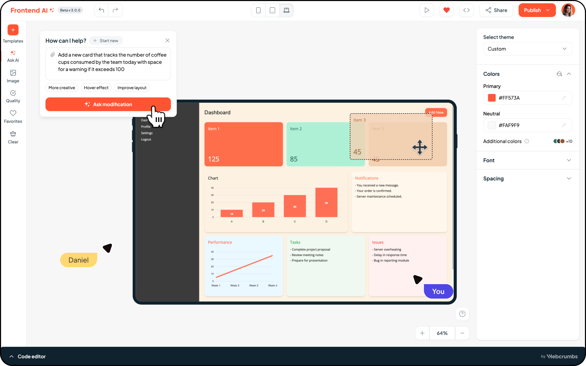

Connect with finders instantly and retrieve your lost items with ease.
How It Works
Simple steps to recover your lost items or help others find theirs
Report Lost Item
Provide details about your lost item including description, location, and upload an image.
Report Found Item
Found something? Post it here with details to help the owner find it quickly.
Get Notified
Receive instant notifications when a potential match is found for your lost item.
Secure Chat
Communicate securely with the finder/owner to arrange item return.
Success stories
Trusted platform of students of UMT!
"Posting about my lost ID card on social media never worked. This platform helped me connect directly with the finder."

"I used to panic every time I lost something on campus. With Lost & Found, I reported my lost phone and had it back in 2 days!"

"I left my water bottle in the library almost daily. Now I can check the portal before buying a new one!"

Ready to Make Lost Items a Thing of the Past?
Join hundreds of students safely reuniting with their belongings through Lost & Found.
Get Started